Manutenções
Este documento descreve os procedimentos de manutenção ordinária e extraordinária das máquinas Donatoni, fornecendo indicações para executar corretamente controlos, verificações e intervenções programadas.
O objetivo é preservar a eficiência e a fiabilidade da máquina, prevenir eventuais anomalias e reduzir o risco de paragens imprevistas.
- FRESADORAS STANDARD
- TABELA COMPARATIVA DE LUBRIFICANTES
- MN0001 TESTE DO CIRCUITO DE EMERGÊNCIA
- MN0002 MANUTENÇÃO MENSAL DA BOMBA DE VÁCUO
- MN0003 TESTE DE FUNCIONAMENTO DO SINAL LUMINOSO
- MN0004 LUBRIFICAÇÃO DAS GUIAS LINEARES DO SISTEMA MOVE
- MN0005 LUBRIFICAÇÃO DO ROLAMENTO DA PORCA DO EIXO Z
- MN0006 LUBRIFICAÇÃO DOS ROLAMENTOS DO VEIO DE TRANSMISSÃO DA PONTE DO EIXO Y
- MN0007 CONTROLO DO LUBRIFICANTE DO SISTEMA DE LUBRIFICAÇÃO AUTOMÁTICA
- MN0008 LUBRIFICAÇÃO DAS ARTICULAÇÕES DA MESA BASCULANTE
- MN0009 LUBRIFICAÇÃO DA ARTICULAÇÃO DO BRAÇO DA CONSOLA
- MN0010 CONTROLO DAS TUBAGENS E UNIÕES DO SISTEMA HIDRÁULICO
- MN0011 MUDANÇA DO ÓLEO DA CENTRAL HIDRÁULICA
- MN0012 LIMPEZA DOS FILTROS DO QUADRO ELÉTRICO
- MN0013 MANUTENÇÃO DO GRUPO DE ENTRADA DE AR COMPRIMIDO
- MN0014 ROLAMENTOS DO ELETROMANDRIL
- MN0041 LUBRIFICAÇÃO DAS GUIAS LINEARES DO MANDRIL LATERAL TOOL PLUS
- MN0042 LIMPEZA DO FILTRO DO SISTEMA PNEUMÁTICO
- MN0043 VERIFICAÇÃO DA ESTANQUEIDADE DA UNIÃO ROTATIVA
- WATERJET
- MN0044 SUBSTITUIÇÃO DO ORIFÍCIO
- MN0045 LUBRIFICAÇÃO MANUAL
- MN0039 LIMPEZA DOS FILTROS DAS ENTRADAS DE VENTILAÇÃO DO QUADRO ELÉTRICO
- MN0015 CONTROLO DAS TUBAGENS E UNIÕES DO SISTEMA DE ALTA PRESSÃO
- MN0030 CONTROLO DO LUBRIFICANTE DO SISTEMA DE LUBRIFICAÇÃO AUTOMÁTICA
- MN0016 CONTROLO DO ESTADO DE LIMPEZA DO TANQUE E ESVAZIAMENTO
- MN0035 VERIFICAR A QUALIDADE DA ÁGUA
- MN0040 MANUTENÇÃO DO GRUPO DE ENTRADA DE AR COMPRIMIDO
- BOMBA BFT
- BOMBA DONATONI HYDROX
- MN0046 Verificação eou substituição dos filtros de água da bomba Hydrox
- MN0048 Vários controlos na bomba Hydrox
- MN0049 Substituição do óleo da bomba Hydrox
- MN0050 Substituição do óleo da bomba Hydrox
- MN0051 Manutenção do corpo da bomba de alta pressão
- MN0052 Substituição das correias de transmissão da bomba Hydrox
- BOMBA HYPERTHERM
- GRUPO OBTURADOR PARA ALTA PRESSÃO
- MN0029 REPARAR A VÁLVULA DE PURGA
- MN0017 REPARAR AS VÁLVULAS DE RETENÇÃO E OS OBTURADORES PARA BAIXA PRESSÃO
- MN0018 REPARAR O CILINDRO DE ALTA PRESSÃO
- MN0019 SUBSTITUIR O CARTUCHO DO ELEMENTO DE VEDAÇÃO DE ALTA PRESSÃO
- MN0021 SUBSTITUIR O OBTURADOR PARA BAIXA PRESSÃO
- MN0022 INVERTER O CILINDRO DE ALTA PRESSÃO
- MN0023 SUBSTITUIR O CILINDRO DE ALTA PRESSÃO
- MN0024 SUBSTITUIR O GRUPO DA VÁLVULA DE RETENÇÃO
- MN0025 SUBSTITUIR O GRUPO DO ALOJAMENTO DO ELEMENTO DE VEDAÇÃO
- MN0026 SUBSTITUIR O ADAPTADOR DE SAÍDA
- MN0028 REPARAÇÃO DA SECÇÃO HIDRÁULICA CENTRAL
- MN0034 SUBSTITUIR O FILTRO DE ÁGUA
- MN0031 SUBSTITUIR O CORPO DA VÁLVULA DE PURGA
- MN0032 LIMPAR O REFRIGERADOR DE AR
- MN0036 SUBSTITUIR O ELEMENTO DO FILTRO HIDRÁULICO
- MN0037 SUBSTITUIR O FLUIDO HIDRÁULICO
- MN0038 LUBRIFICAR OS ROLAMENTOS DO MOTOR PRIMÁRIO
- MN0020 SUBSTITUIR O GRUPO OBTURADOR PARA ALTA PRESSÃO
- MN0047 SUBSTITUIÇÃO DO TUBO FOCALIZADOR
- MN0053 SUBSTITUIÇÃO DO TUBO DE ABRASIVO
- INSTRUÇÕES DE SEGURANÇA
Lista de manutenções standard para uma fresadora do tipo JET625
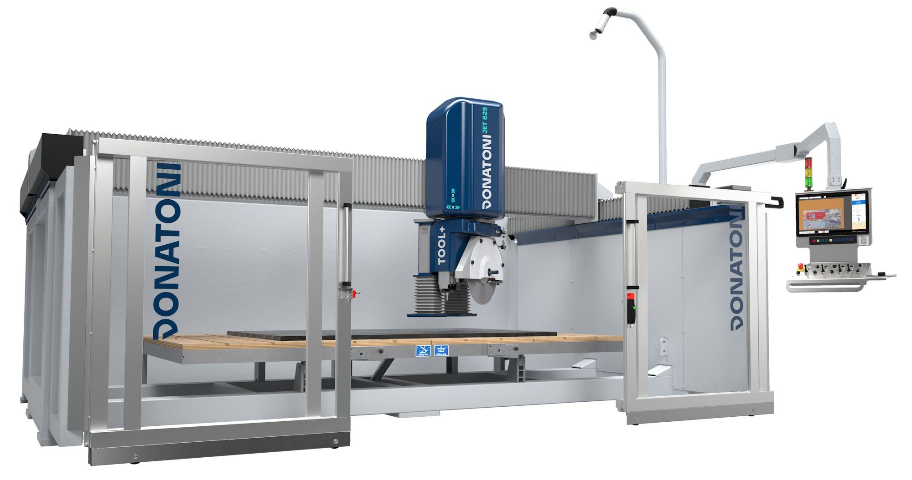

Antes de prosseguir, ler atentamente as | |
Intervalo200 horas de trabalho | Complexidade da operaçãoLow01 / 05 |
Pessoa autorizadaOperador da máquina | EPI previstos:  |
Vídeo
Procedimento
Com a máquina ligada e preparada para funcionar no modo de acesso à zona perigosa, premir o botão de paragem de emergência e verificar:
Que no monitor do painel de comando seja apresentado o estado de “EMERGÊNCIA ATIVA
Que se acenda o setor vermelho do sinal luminoso situado no painel de comandos.
Que, ao efetuar qualquer movimento de um dos eixos da máquina através das alavancas de ação mantida presentes no painel de comando, não ocorra qualquer movimento no interior da máquina.
Restabelecer o funcionamento da máquina e verificar:
Que no monitor do painel de comando desapareça a indicação de “EMERGÊNCIA ATIVA”.
Que se apague o setor vermelho do sinal luminoso situado no painel de comandos.
Que, ao efetuar qualquer movimento de um dos eixos da máquina através das alavancas de ação mantida presentes no painel de comando, ocorra o movimento correspondente no interior da máquina
Antes de prosseguir, ler atentamente as | |
Intervalotodas as semanas; todos os meses | Complexidade da operaçãoLow01 / 05 |
Pessoa autorizadaOperador da máquina | EPI previstos:  |
Vídeo
Procedimento
A manutenção da bomba de vácuo em bom estado depende do nível de limpeza da água do sistema hidráulico. É da responsabilidade do comprador assegurar que as características da água utilizada estejam em conformidade com o previsto no manual de utilização e manutenção do fabricante da bomba.
Todas as semanas:
Verificar se o nível da água no depósito atinge o nível do tubo de descarga de “transbordo”
Em caso de utilização esporádica do sistema de vácuo, acionar semanalmente a bomba de vácuo através do comando de ativação do vácuo (consultar a sec. B do manual “Instruções de utilização” associado ao presente manual)
Todos os meses:
Efetuar uma limpeza minuciosa do depósito, removendo eventuais depósitos de sedimentos acumulados no fundo
Para indicações mais detalhadas sobre a manutenção da bomba de vácuo, consultar o manual de utilização e manutenção
120113044828_Manuale_Vuoto_Italiano.pdf
Antes de prosseguir, ler atentamente as | |
Intervalo— | Complexidade da operaçãoLow01 / 05 |
Pessoa autorizadaOperador da máquina | EPI previstos:  |
Imagens

Procedimento
Teste da secção laranja do sinal luminoso:
Preparar a máquina para funcionar no modo de acesso à zona perigosa, conforme descrito no capítulo - MODO DE ACESSO À ZONA PERIGOSA, e verificar o acendimento intermitente do setor laranja do sinal luminoso.
Preparar a máquina para funcionar em “modo lento” (consultar a sec. B do manual “Instruções de utilização” associado ao presente manual) e verificar o acendimento contínuo do setor laranja do sinal luminoso.
Teste da secção verde do sinal luminoso:
Preparar a máquina para funcionar em modo de trabalho, conforme descrito no capítulo - MODO DE TRABALHO, efetuar qualquer movimento de um dos eixos da máquina através das alavancas de ação mantida presentes no painel de comando (consultar a sec. B do manual “Instruções de utilização” associado ao presente manual) e verificar o acendimento intermitente do setor verde do sinal luminoso durante o movimento
Teste da secção vermelha do sinal luminoso:
Premir o botão de paragem de emergência presente no painel de controlo e verificar o acendimento intermitente do setor vermelho do sinal luminoso.
NOTA: para restabelecer o funcionamento da máquina, proceder conforme descrito no manual
Antes de prosseguir, ler atentamente as | |
IntervaloA cada 300 horas de trabalho | Complexidade da operaçãoLow01 / 05 |
Pessoa autorizadaOperador da máquina | EPI previstos:  |
Vídeo
Imagens

Procedimento
Pelo menos a cada 300 horas de trabalho, utilizar uma pistola adequada para lubrificar as guias lineares do sistema MOVE com 1cm3 de massa lubrificante através dos bicos indicados na figura

Antes de prosseguir, ler atentamente as | |
Intervaloa cada 300 horas de trabalho | Complexidade da operaçãoLow01 / 05 |
Pessoa autorizadaOperador da máquina | EPI previstos:  |
Imagens

Procedimento
Pelo menos a cada 300 horas de trabalho, utilizar uma pistola adequada para lubrificar o rolamento da porca do eixo Z com 1 cm3 de massa lubrificante através do bico indicado na figura
O bico de lubrificação encontra-se na parte lateral direita do canhão, por baixo da cobertura indicada na figura, e está posicionado conforme indicado e destacado na imagem.

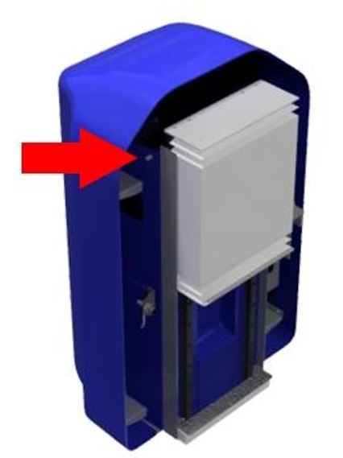
Antes de prosseguir, ler atentamente as | |
Intervaloa cada 300 horas de trabalho | Complexidade da operaçãoLow01 / 05 |
Pessoa autorizadaOperador da máquina | EPI previstos:  |
Vídeo
Imagem

Procedimento
Pelo menos a cada 300 horas de trabalho, utilizar uma pistola adequada para lubrificar os rolamentos do veio de transmissão do eixo Y com 1 cm3 de massa lubrificante através dos bicos indicados na figura

Antes de prosseguir, ler atentamente as | |
Intervaloa cada 300 horas de trabalho | Complexidade da operaçãoLow01 / 05 |
Pessoa autorizadaOperador da máquina | EPI previstos:  |
Imagens

Procedimento
O sistema de lubrificação automática é composto por uma unidade automática que lubrifica os componentes ligados de acordo com a temporização programada.

O depósito deve ser reabastecido com a quantidade necessária de massa lubrificante sem ultrapassar o nível máximo indicado.
Pelo menos a cada 500 horas de trabalho, verificar o nível de massa lubrificante no depósito e, quando necessário, reabastecer utilizando o tipo correto de massa lubrificante
N.B. Um alarme no ecrã avisa o operador quando o nível da massa lubrificante atinge o nível mínimo no depósito e, por isso, é necessário reabastecer.
Manual específico do dispositivo
Antes de prosseguir, ler atentamente as | |
Intervaloa cada 6 meses | Complexidade da operaçãoLow01 / 05 |
Pessoa autorizadaOperador da máquina | EPI previstos:  |
Vídeo
Imagens

Procedimento
Pelo menos a cada 6 meses, utilizar uma pistola adequada para lubrificar as articulações da mesa basculante com 1cm3 de massa lubrificante através dos bicos indicados na figura.

Antes de prosseguir, ler atentamente as | |
Intervalo— | Complexidade da operaçãoLow01 / 05 |
Pessoa autorizadaOperador da máquina | EPI previstos:  |
Antes de prosseguir, ler atentamente as | |
Intervalotodos os anos = 8760 h | Complexidade da operaçãoLow01 / 05 |
Pessoa autorizadaOperador da máquina | EPI previstos:  |
Antes de prosseguir, ler atentamente as | |
Intervaloa cada 2000 horas de trabalho | Complexidade da operaçãoLow01 / 05 |
Pessoa autorizadaOperador da máquina | EPI previstos:  |
Vídeo
Procedimento
A mudança do óleo deve ser efetuada, em regra, pelo menos a cada 2000 horas de trabalho; a substituição deve ser acompanhada por uma limpeza minuciosa do depósito.
O esvaziamento é efetuado através do tampão inferior (pos B na figura) e a introdução do fluido no depósito deve ser feita através de um filtro com malha de 10 micron, pelo tampão de enchimento (pos A na figura)

Antes de prosseguir, ler atentamente as | |
Intervaloa cada 2000 horas de trabalho | Complexidade da operaçãoLow01 / 05 |
Pessoa autorizadaOperador da máquina | EPI previstos:  |
Procedimento
Operações
Rodar o interruptor A para a posição OFF |  |
Abrir as portas D e E | 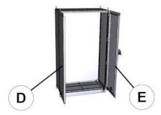 |
Remover a proteção F e o filtro G |  |
Limpar o filtro utilizando um jato de ar comprimido H | 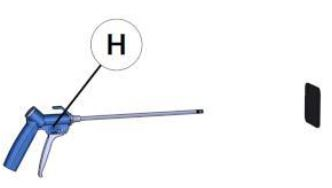 |
Restabelecer executando o procedimento inverso |
Antes de prosseguir, ler atentamente as | |
Intervalo— | Complexidade da operaçãoLow01 / 05 |
Pessoa autorizadaOperador da máquina | EPI previstos:  |
Antes de prosseguir, ler atentamente as | |
Intervaloa cada 1550 horas de trabalho | Complexidade da operaçãoLow01 / 05 |
Pessoa autorizadaOperador da máquina | EPI previstos:  |
Antes de prosseguir, ler atentamente as | |
Intervaloa cada 300 horas de trabalho | Complexidade da operaçãoLow01 / 05 |
Pessoa autorizadaOperador da máquina | EPI previstos:  |
Vídeo
Procedimento
Pelo menos a cada 300 horas de trabalho, utilizar uma pistola adequada para lubrificar as guias lineares do sistema MOVE com 1cm3 de massa lubrificante através dos bicos indicados na figura
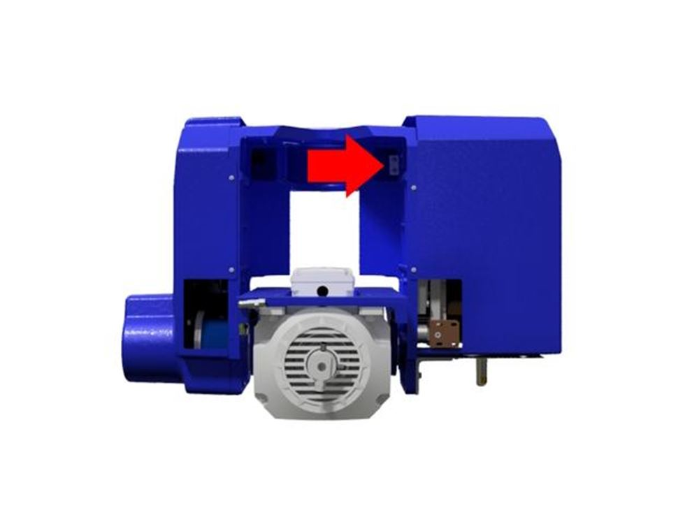
Antes de prosseguir, ler atentamente as | |
Intervaloa cada 2000 horas de trabalho | Complexidade da operaçãoLow01 / 05 |
Pessoa autorizadaOperador da máquina | EPI previstos:  |
Vídeo
Instruções de segurança específicas da manutenção
Para limpar o filtro, antes de intervir, despressurizar o sistema atuando na válvula de corte do grupo de ar e bloqueá-la com um cadeado.
(Consultar o manual do fabricante
Procedimento
Para as indicações relativas à manutenção do grupo de entrada de ar comprimido, consultar o manual de utilização e manutenção do fabricante.
Antes de efetuar operações de manutenção, fechar a válvula de corte e colocar-lhe um cadeado.
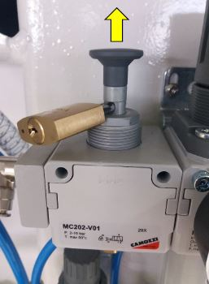
Antes de prosseguir, ler atentamente as | |
Intervaloa cada 500 horas de trabalho | Complexidade da operaçãoLow01 / 05 |
Pessoa autorizadaOperador da máquina | EPI previstos:  |
Procedimento
Verificar se externamente não existem sinais de fugas de líquido refrigerante. Em caso de fugas, proceder à substituição pelo componente de substituição específico.
Substituição
Em caso de substituição, proceder conforme descrito abaixo
Desapertar o tampão |  |
|---|---|
Introduzir no orifício central uma chave Allen de 6mm. |  |
Voltar a apertar o tampão traseiro. |  |
Área para as operações de manutenção acessível a partir da máquina para máquinas do tipo Waterjet.

Antes de prosseguir, ler atentamente as | |
Intervaloa cada 70 horas de trabalho | Complexidade da operaçãoLow01 / 05 |
Pessoa autorizadaOperador da máquina | EPI previstos:  |
Desapertar (NÃO DESLIGAR) a união do tubo de alta pressão
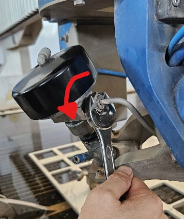
Mantendo o corpo da válvula imóvel, desapertar o anel inferior
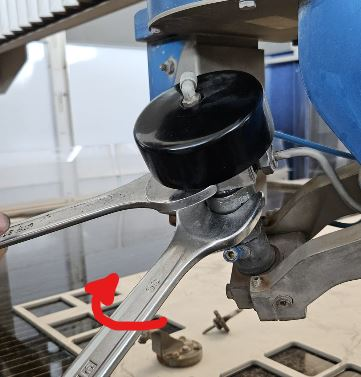
Desencaixar e deslocar a válvula

Desapertar o corpo de união para aceder à sede do orifício
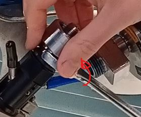


Com a ajuda de um tubo pequeno, um alicate ou outro utensílio, remover o orifício gasto

Inserir o novo orifício na sede, verificando a orientação correta (parte cónica virada para cima)

Limpar as diferentes uniões e aplicar depois o lubrificante antigripante (Blue Goop) antes da fixação
Proceder pela sequência inversa para a remontagem, respeitando os binários de aperto

Documentos anexos
Video
Antes de prosseguir, ler atentamente as | |
Intervaloa cada 300 horas de trabalho | Complexidade da operaçãoLow01 / 05 |
Pessoa autorizadaOperador da máquina | EPI previstos:  |
Utilizar uma pistola adequada para lubrificar os diferentes pontos indicados abaixo com 1cm3 de massa lubrificante EP1:
Guias lineares do mandril lateral TOOL_

Guias lineares do apalpador da chapa

Passagem do redutor do eixo A

Tabela comparativa de lubrificantes

Antes de prosseguir, ler atentamente as | |
Intervaloa cada 2000 horas de trabalho | Complexidade da operaçãoLow01 / 05 |
Pessoa autorizadaOperador da máquina | EPI previstos:  |
Desligar corretamente a máquina e rodar o interruptor para a posição OFF

Remover a cobertura, desencaixando-a por baixo e deslocando-a para cima

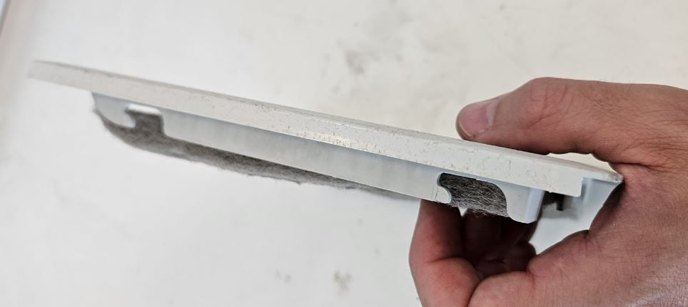
Limpar o filtro utilizando uma pistola de ar

Voltar a montar tudo seguindo o procedimento inverso
Antes de prosseguir, ler atentamente as | |
Intervaloa cada 1000 horas de trabalho | Complexidade da operaçãoLow01 / 05 |
Pessoa autorizadaOperador da máquina | EPI previstos:  |
Procedimento
Posicionar a máquina no centro do tanque. Ligar a bomba e verificar se existem fugas ao longo das tubagens de alta pressão.
Em caso de fugas, desligar a bomba, premir o botão cogumelo de emergência e eliminar a fuga apertando a união com o binário de aperto correto.
35 Nm para as uniões de 1/4” de polegada
70 Nm para as uniões de 3/8” de polegada
Em seguida, desativar a emergência, ativar os comandos e tentar voltar a ligar a bomba para verificar se existem outras fugas.
No link abaixo está disponível o esquema dos tubos HP.
Antes de prosseguir, ler atentamente as | |
Intervaloa cada 450 horas de trabalho | Complexidade da operaçãoLow01 / 05 |
Pessoa autorizadaOperador da máquina | EPI previstos:  |
Procedimento
O sistema de lubrificação automática é composto por uma unidade automática que lubrifica os componentes ligados de acordo com a temporização programada
O depósito deve ser reabastecido com a quantidade necessária de massa lubrificante sem ultrapassar o nível máximo indicado. O reabastecimento deve ser efetuado através da ligação específica (A na figura)

Antes de prosseguir, ler atentamente as | |
Intervalorelacionado com o consumo de abrasivo | Complexidade da operaçãoLow01 / 05 |
Pessoa autorizadaOperador da máquina | EPI previstos:  |
Procedimento
Verificar se a ponte e os outros elementos da máquina não entram em contacto com as partes a movimentar
Abrir a torneira de descarga para esvaziar o tanque

Elevar a estrutura das lâminas utilizando os suportes adequados (Peso da estrutura = 750Kg)

Remover as grelhas de recuperação de peças
(OPCIONAL) Elevar os tanques de recolha de abrasivo e esvaziá-los. Em seguida, proceder à sua limpeza e verificação da integridade
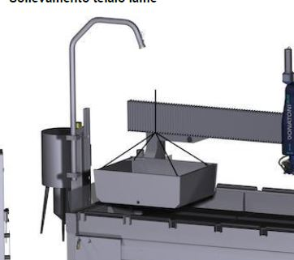
Limpar cuidadosamente o tanque, removendo os resíduos de abrasivo
Reposicionar os tanques de recolha de abrasivo, as grelhas e o plano de lâminas
Antes de prosseguir, ler atentamente as | |
Intervaloa cada 1000 horas de trabalho | Complexidade da operaçãoLow01 / 05 |
Pessoa autorizadaOperador da máquina | EPI previstos:  |
Antes de prosseguir, ler atentamente as | |
Intervaloa cada 400 horas de trabalho | Complexidade da operaçãoLow01 / 05 |
Pessoa autorizadaOperador da máquina | EPI previstos:  |
Antes de prosseguir, ler atentamente as | |
Intervalo— | Complexidade da operaçãoLow01 / 05 |
Pessoa autorizadaOperador da máquina | EPI previstos:  |
Antes de prosseguir, ler atentamente as | |
Intervalo— | Complexidade da operaçãoLow01 / 05 |
Pessoa autorizadaOperador da máquina | EPI previstos:  |
Antes de prosseguir, ler atentamente as | |
Intervaloa cada 150 horas de trabalho | Complexidade da operaçãoLow01 / 05 |
Pessoa autorizadaOperador da máquina | EPI previstos:  |

Posição | Descrição | Grau de filtração |
|---|---|---|
A | Filtro de água com cartucho de 9/10" | 5 μm |
B | Filtro de água com cartucho de 9/10" | 1 μm |
Verificação: quando devem ser substituídos?
É necessário substituir os cartuchos filtrantes quando a perda de carga no sistema se torna superior a 1 bar (quando a diferença de pressão entre o ponto de entrada X e o ponto de saída Y passa a ser: X-Y > 1 bar)

Procedimento de substituição
Desapertar o recipiente do filtro utilizando a chave fornecida;

Remover o cartucho filtrante usado;
Limpar o recipiente do filtro (removendo eventuais resíduos ou detritos);
Inserir o novo cartucho filtrante (ter o cuidado de instalar o cartucho com o grau de filtração correto em cada posição);
Posicionar o recipiente do filtro na respetiva sede e apertar utilizando a chave;
Antes de prosseguir, ler atentamente as | |
Intervalomensal | Complexidade da operaçãoLow01 / 05 |
Pessoa autorizadaOperador da máquina | EPI previstos:  |
Verificação do nível de óleo do motor da bomba
Retirar a vareta e verificar o nível.
Verificar também se não existe água de corte no lubrificante “Emulsão”

Verificação do recipiente de água suja
Se no recipiente for detetada uma quantidade excessiva de fluido ou emulsão, contactar a assistência técnica Donatoni Service srl para receber instruções ou programar uma verificação do sistema de vedação da bomba de pistões

Espaço intermédio da bomba de alta pressão (controlo visual)
verificar se os foles não estão danificados. Em caso de danos, contactar a assistência
Em caso de danos no fole, verificar também a eventual corrosão na haste do
pistão.Verificar se o fluido de funcionamento está presente no espaço intermédio; nesse
caso, contactar a assistência

Antes de prosseguir, ler atentamente as | |
Intervalo1 ano ou 4 anos a partir da segunda vez | Complexidade da operaçãoMedium03 / 05 |
Pessoa autorizadaOperador da máquina | EPI previstos:  |
Para alcançar o tampão da válvula de descarga e o bocal de enchimento, abrir a cobertura (A) e remover a cobertura frontal (C) e lateral (B).
Para recolher o óleo, é necessário um recipiente de recolha adequado com capacidade superior a 5litri.
Colocar um pano ou material semelhante por baixo do tampão de descarga do óleo (E).
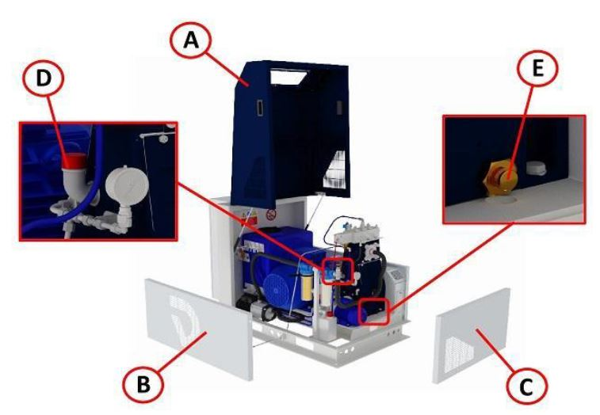
Remover o tampão (D) do bocal de enchimento do óleo.
Para descarregar o óleo, utilizar o tubo flexível com a ligação roscada específica fornecida. Garantir que a extremidade aberta permanece dentro do recipiente preparado para a recolha
Desapertar o tampão da válvula de descarga do óleo (E). O óleo começa a sair assim que se aperta a ligação roscada do tubo flexível.
Verificar a presença de emulsão no óleo usado. Se existir emulsão, eliminar a humidade do circuito de óleo.
Remover o tubo flexível e apertar o tampão da válvula de descarga do óleo (E).
Encher o cárter com cerca de 4.3 litros de óleo novo, verificando o nível através da vareta.
Classe de viscosidade do óleo: PAO ISO VG 320.
No final do documento encontra-se uma tabela comparativa.
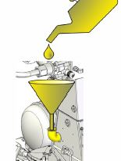 |  |

Antes de prosseguir, ler atentamente as | |
Intervalo1 ano ou 4 anos a partir da segunda vez | Complexidade da operaçãoMedium03 / 05 |
Pessoa autorizadaOperador da máquina | EPI previstos:  |
Ver página
MN0049 Substituição do óleo da bomba Hydrox
Antes de prosseguir, ler atentamente as | |
Intervaloa cada 1500 horas de funcionamento | Complexidade da operaçãoCritical05 / 05 |
Pessoa autorizadaService Donatoni | EPI previstos:  |
Algumas partes da bomba estão sujeitas a desgaste; a sua manutenção deve ser efetuada por pessoal devidamente formado.
As operações de manutenção devem ser efetuadas na cabeça da bomba e no grupo pistão/cilindro. Em função das horas, existem diferentes componentes a substituir.
Contactar a assistência Donatoni para a manutenção
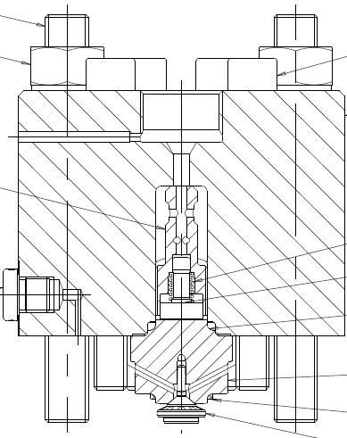

Antes de prosseguir, ler atentamente as | |
Intervaloa cada 6000 horas de funcionamento | Complexidade da operaçãoCritical05 / 05 |
Pessoa autorizadaService Donatoni | EPI previstos:  |
O tensionamento das correias deve ser efetuado segundo especificações precisas. Contactar a assistência Donatoni para a manutenção

Antes de prosseguir, ler atentamente as | |
Intervalo— | Complexidade da operaçãoLow01 / 05 |
Pessoa autorizadaOperador da máquina | EPI previstos:  |
Imagens
Antes de prosseguir, ler atentamente as | |
Intervaloa cada 2000 horas de trabalho | Complexidade da operaçãoLow01 / 05 |
Pessoa autorizadaOperador da máquina | EPI previstos:  |
Imagens
Antes de prosseguir, ler atentamente as | |
Intervaloa cada 1000 horas de trabalho | Complexidade da operaçãoLow01 / 05 |
Pessoa autorizadaOperador da máquina | EPI previstos:  |
Imagens
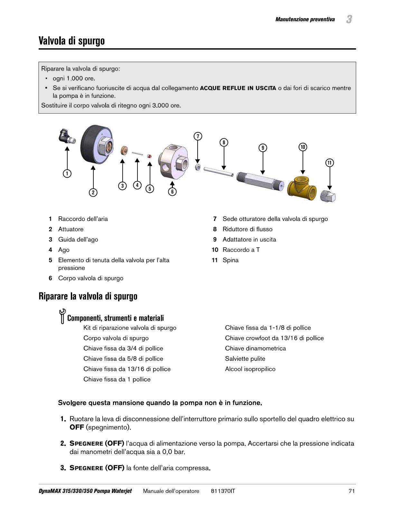


Antes de prosseguir, ler atentamente as | |
Intervaloa cada 500 horas de trabalho | Complexidade da operaçãoLow01 / 05 |
Pessoa autorizadaOperador da máquina | EPI previstos:  |
Antes de prosseguir, ler atentamente as | |
Intervaloa cada 500 horas de trabalho | Complexidade da operaçãoLow01 / 05 |
Pessoa autorizadaOperador da máquina | EPI previstos:  |
Antes de prosseguir, ler atentamente as | |
Intervaloa cada 500 horas de trabalho | Complexidade da operaçãoLow01 / 05 |
Pessoa autorizadaOperador da máquina | EPI previstos:  |
Antes de prosseguir, ler atentamente as | |
Intervaloa cada 1000 horas de trabalho | Complexidade da operaçãoLow01 / 05 |
Pessoa autorizadaOperador da máquina | EPI previstos:  |
Antes de prosseguir, ler atentamente as | |
Intervaloa cada 1500 horas de trabalho | Complexidade da operaçãoLow01 / 05 |
Pessoa autorizadaOperador da máquina | EPI previstos:  |
Antes de prosseguir, ler atentamente as | |
Intervaloa cada 3000 horas de trabalho | Complexidade da operaçãoLow01 / 05 |
Pessoa autorizadaOperador da máquina | EPI previstos:  |
Antes de prosseguir, ler atentamente as | |
Intervaloa cada 3000 horas de trabalho | Complexidade da operaçãoLow01 / 05 |
Pessoa autorizadaOperador da máquina | EPI previstos:  |
Antes de prosseguir, ler atentamente as | |
Intervaloa cada 6000 horas de trabalho | Complexidade da operaçãoLow01 / 05 |
Pessoa autorizadaOperador da máquina | EPI previstos:  |
Antes de prosseguir, ler atentamente as | |
Intervaloa cada 6000 horas de trabalho | Complexidade da operaçãoLow01 / 05 |
Pessoa autorizadaOperador da máquina | EPI previstos:  |
Antes de prosseguir, ler atentamente as | |
Intervaloa cada 12000 horas de trabalho | Complexidade da operaçãoLow01 / 05 |
Pessoa autorizadaOperador da máquina | EPI previstos:  |
Antes de prosseguir, ler atentamente as | |
Intervaloa cada 1000 horas de trabalho | Complexidade da operaçãoLow01 / 05 |
Pessoa autorizadaOperador da máquina | EPI previstos:  |
Antes de prosseguir, ler atentamente as | |
Intervaloa cada 3000 horas de trabalho | Complexidade da operaçãoLow01 / 05 |
Pessoa autorizadaOperador da máquina | EPI previstos:  |
Antes de prosseguir, ler atentamente as | |
Intervaloa cada 1000 horas de trabalho | Complexidade da operaçãoLow01 / 05 |
Pessoa autorizadaOperador da máquina | EPI previstos:  |
Antes de prosseguir, ler atentamente as | |
Intervaloa cada 1500 horas de trabalho | Complexidade da operaçãoLow01 / 05 |
Pessoa autorizadaOperador da máquina | EPI previstos:  |
Antes de prosseguir, ler atentamente as | |
Intervaloa cada 3000 horas de trabalho | Complexidade da operaçãoLow01 / 05 |
Pessoa autorizadaOperador da máquina | EPI previstos:  |
Antes de prosseguir, ler atentamente as | |
Intervaloa cada 3000 horas de trabalho | Complexidade da operaçãoLow01 / 05 |
Pessoa autorizadaOperador da máquina | EPI previstos:  |
Antes de prosseguir, ler atentamente as | |
Intervaloa cada 1000 horas de trabalho | Complexidade da operaçãoLow01 / 05 |
Pessoa autorizadaOperador da máquina | EPI previstos:  |
Antes de prosseguir, ler atentamente as | |
Intervaloa cada 100 horas de trabalho | Complexidade da operaçãoLow01 / 05 |
Pessoa autorizadaOperador da máquina | EPI previstos:  |
Remover o apalpador para facilitar a desmontagem

Rodar o anel para remover o tubo focalizador.
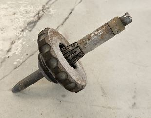
Substituir o tubo focalizador por um novo elemento, recuperando o espaçador

Voltar a montar e apertar o anel depois de inserir a nova peça

Voltar a montar o apalpador da chapa

Executar a apalpação do bico para definir o valor correto “Delta Z”
Vídeo
Antes de prosseguir, ler atentamente as | |
Intervaloa cada 1000 horas de trabalho | Complexidade da operaçãoMedium03 / 05 |
Pessoa autorizadaOperador da máquina | EPI previstos:  |
Rodar o eixo A a 90_ para poder aceder ao fecho na cabeça
Remover a cobertura

Remover a cobertura de proteção por baixo da cabeça
Remover o fixador do tubo
Retirar o tubo por baixo, memorizando o percurso; o novo tubo deverá depois ser passado pelo mesmo percurso
Introduzir o novo tubo de abrasivo
Fixar o tubo com o engate específico
Voltar a fechar as coberturas, prestando atenção aos cabos presentes por baixo da cabeça
Vídeo
Antes de iniciar qualquer operação de instalação, configuração ou manutenção, ler atentamente TODOS os manuais de instruções, documentos e guias fornecidos com a máquina.
Quem executa a operação é o único responsável pelo correto funcionamento e pela manutenção da máquina.
A Donatoni Macchine declina expressamente qualquer responsabilidade por eventuais acidentes (incluindo morte) ou danos no equipamento ou noutros bens causados por utilização ou manutenção inadequadas da máquina, bem como pelo incumprimento dos procedimentos estabelecidos no manual de instruções do equipamento ou em qualquer outro material e procedimento de segurança. Em caso de problemas ou dificuldades, recomendamos vivamente contactar a Donatoni Macchine ou o seu centro de assistência de referência.
A segurança é uma prioridade. Se tiver dúvidas, não hesite em contactar a assistência Donatoni através dos seguintes contactos:
T: _39 045 6862899
WhatsApp: _39 045 7740052
Telegram: @donatonimacchine_bot